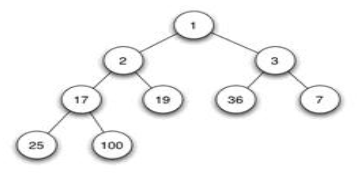

下面是关于排序算法实现比较难的两个：堆排序和基排序；另外还介绍一种特殊的排序算法。
heapSort
二叉堆的定义
堆排序与快速排序，归并排序一样都是时间复杂度为O(N*logN)的几种常见排序方法。
二叉堆是完全二叉树或者是近似完全二叉树。
二叉堆满足二个特性：
父结点的键值总是大于或等于（小于或等于）任何一个子节点的键值。
每个结点的左子树和右子树都是一个二叉堆（都是最大堆或最小堆）。
当父结点的键值总是大于或等于任何一个子节点的键值时为最大堆。当父结点的键值总是小于或等于任何一个子节点的键值时为最小堆。下图展示一个最小堆：

一般都用数组来表示堆，i结点的父结点下标就为(i – 1) / 2。它的左右子结点下标分别为2 i + 1和2 i + 2。如第0个结点左右子结点下标分别为1和2。这里i从0开始算起。
本代码中使用的是最大堆。
实现堆排序
本代码中下标从1开始算 ，这样左右就是2k和2k+1，使用时a[i-1]即可；
需要一个实现最大堆的函数使其父节点大于等于左右节点：
接着需要建堆，使得从a[0]到a[n/2-1]的所有节点都满足最大堆，剩余节点为叶子节点：
现在可以写堆排序了：排序前使得数组满足最大堆，这时a[0]是最大值，每次都把a[0]和a[n-1]交换，最大值永远放到后面；交换后需要保持最大堆的要求，递归，完成排序：
radixSort
基数排序与其他排序方法都不同，它不需要比较关键字的大小。
它是根据关键字中各位的值，通过对排序的N个元素进行若干趟“分配”与“收集”来实现排序的。
我们知道，任何一个阿拉伯数，它的各个位数上的基数都是以0~9来表示的。所以我们不妨把0~9视为10个桶。
我们先根据序列的个位数的数字来进行分类，将其分到指定的桶中。例如50，个位数上是0，将这个数存入编号为0的桶中。我们可以按照下面的一组数字做出说明：12、 104、 13、 7、 9
- 按个位数排序是12、13、104、7、9
- 再根据十位排序104、7、9、12、13
- 再根据百位排序7、9、12、13、104
以下是实现代码：123456789101112131415161718192021222324void RadixSort(int *ArrayToSort, int digit, int n) {for (int k = 1; k <= digit; k++) { // 低位开始排int *tmpArray = new int[n]; // 排序后的数组int *tmpCountingSortArray = new int[10]; // 10个桶for (int i = 0; i < 10; ++i) tmpCountingSortArray[i] = 0;for (int i = 0; i < n; i++) { // 取出对应位上的数字并标记int tmpSplitDigit = ArrayToSort[i]/(int)pow(10, k-1)-(ArrayToSort[i]/(int)pow(10, k))*10;tmpCountingSortArray[tmpSplitDigit] += 1;}for (int m = 1; m < 10; m++) // 巧妙之处，算出对应下标tmpCountingSortArray[m] += tmpCountingSortArray[m-1];for (int i = n-1; i >= 0; i--) { // 核心int tmpSplitDigit = ArrayToSort[i]/(int)pow(10, k-1)-(ArrayToSort[i]/(int)pow(10, k))*10;tmpArray[tmpCountingSortArray[tmpSplitDigit]-1] = ArrayToSort[i]; // 核心tmpCountingSortArray[tmpSplitDigit] -= 1;}for (int p = 0; p < n; p++)ArrayToSort[p] = tmpArray[p];}}
特殊排序
在一个庞大的数据系统中，要找出第k大的数，需要高效的算法。一种可行但效率不高的方法是，首先剔除数字序列中重复的数字，然后通过某种排序算法，获得剔除重复数字后的数字序列从大到小排序的数字序列，然后取从大到小排序的数字序列的第k位的数字。从另一个角度，题目中的第k大数字即是不计入数字序列中数字重复出现的部分，对于数字重复出现的情况，应该认为该数字只出现一次。
这里我们使用char数组，每个a[i]有八位，对于一个确定的数，我们能够把它映射到a[i]中的第j位，把这一位标为1即可。排完序后，8*i+j就是这个数的值，当然这里说的是整数。下面使用这个方法找出某序列中的第k大的数：